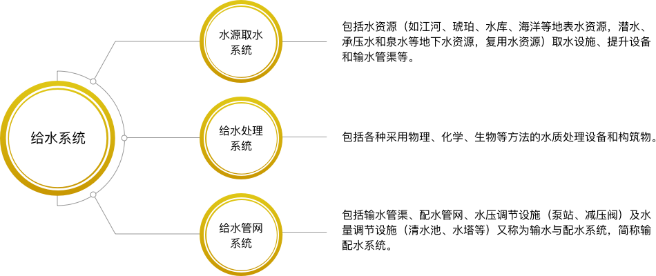
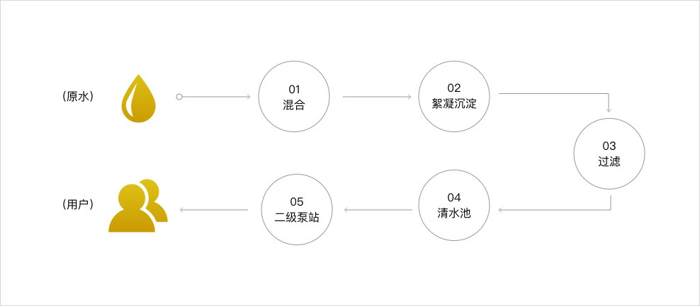

水质报告/
Water Quality Report
当前位置: 首页>
水质报告
水质报告
用水常识
给水系统
给水系统的功能与组成
给水系统是为人们的生活、生产和消防提供用水的设施总称

给水处理方法概述
给水处理典型工艺流程

水处理方法的确定应根据水源水质和用水对象对水质的要求确定。
给水处理的任务：是通过必要的出来方法去除水中对的杂质，使之符合生活应用或工业所要求的水质。
 当前位置: 首页>水质报告
当前位置: 首页>水质报告